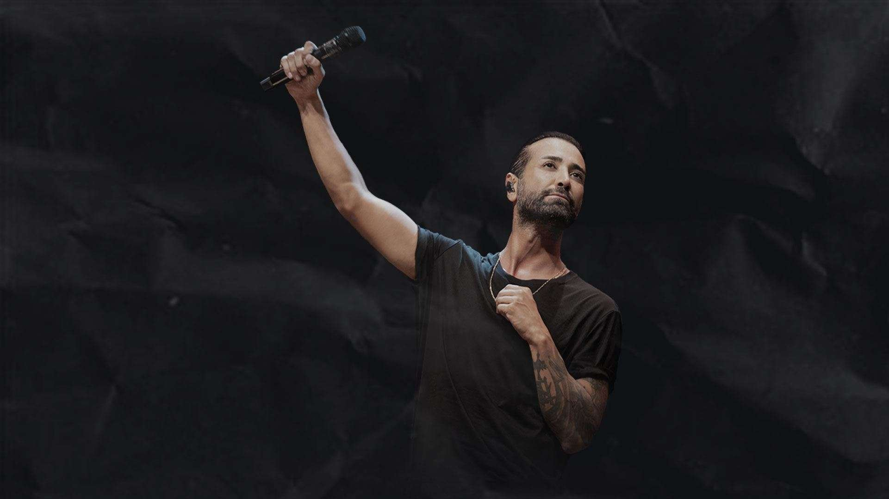

Söz & Müzik Tan Taşçı Konserleri
Tan TaşçıBorn in Hannover-Germany on October 30th 1981, Tan Taşçı has settled in Turkey in his early ages. He was educated in Ankara Arı College and he was a vocalist in Hacettepe University’s polifonic chorus. Tan Taşçı is a graduate of Ankara University Opera & Chorus which he started his professional music career while he was a student of. Taşçı released his first album in 2005. “Rica Ederim” album was consisted of songs all written and composed by himself.
TT
TAN TAŞÇI, Bayhan Prodüksiyon organizasyonuyla Türkiye'nin çeşitli etkinlik mekanlarında sevenleri ile buluşuyor. Türkçe pop müziğin önemli erkek vokallerinden Tan Taşçı, profesyonel müzik kariyerinin 15. Yılı için özel olarak hazırladığı ‘’Söz & Müzik: Tan Taşçı’’ konserlerine devam ediyor. Tan Taşçı, 15 yıllık kariyerinde, kendi bestesi olan şarkılarını yepyeni düzenlemeler eşliğinde dinleyicisiyle buluşturuyor. Pandemi sürecinde ‘’Söz & Müzik: Tan Taşçı’’ konser kayıtlarından oluşan bir albüm de yayınlayan sanatçı, bu projesiyle dijital müzik platformlarında en çok dinlenen albümler arasında yer alıyor. Bu konser serisinde kendi diskografisinde yer alan şarkıları yanı sıra müzisyen dostlarıyla paylaştığı şarkılarını da yorumlayan Taşçı, yoğun istek üzerine ‘’Söz & Müzik: Tan Taşçı’’ konserlerine Bayhan Prodüksiyon organizasyonuyla devam ediyor.